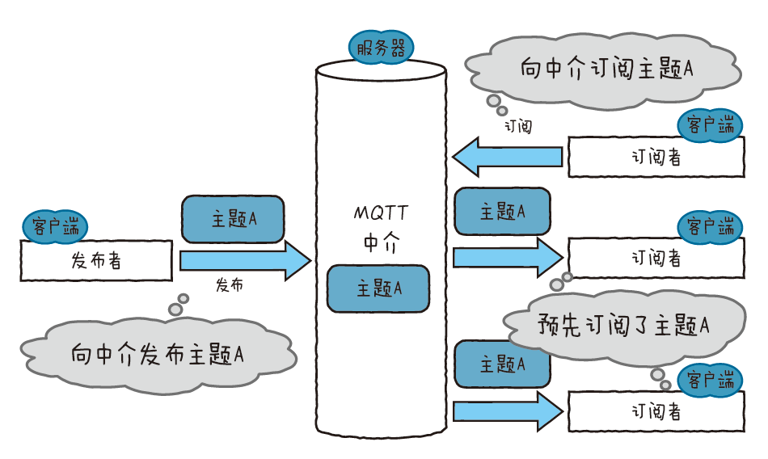
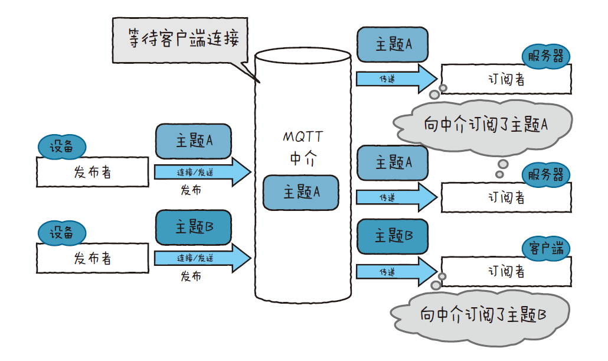
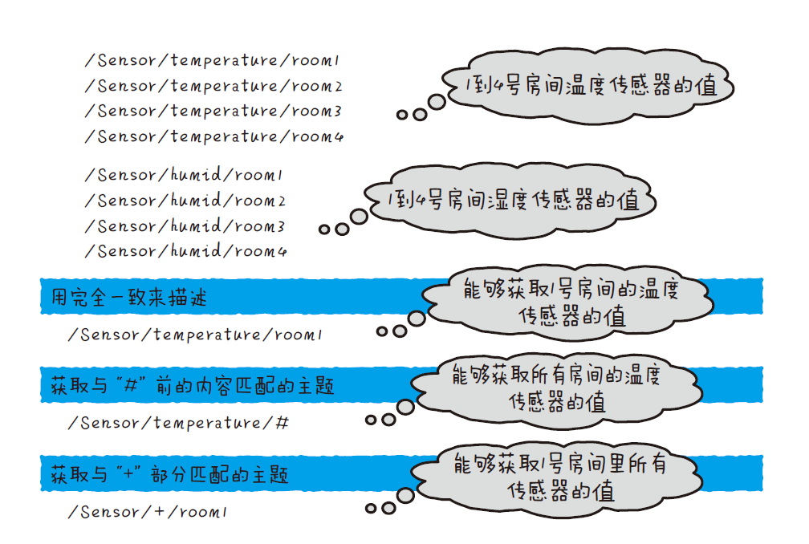
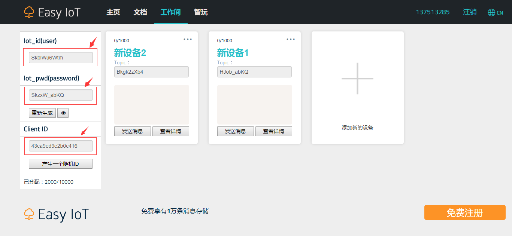
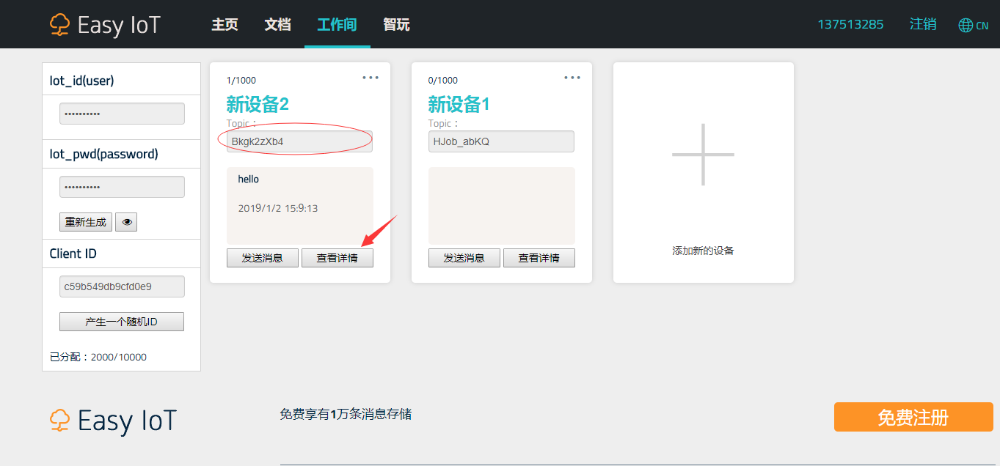
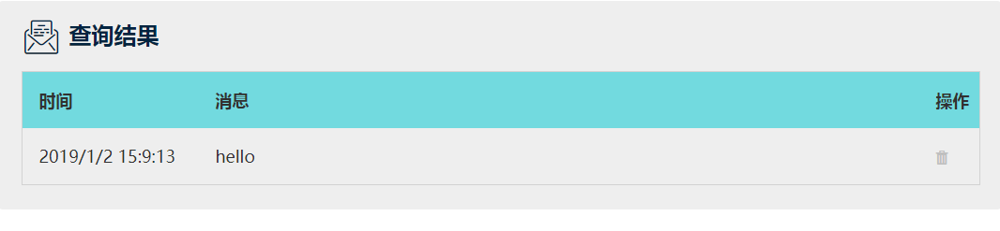
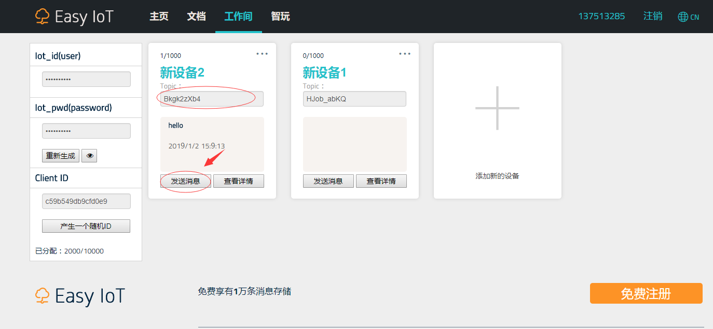
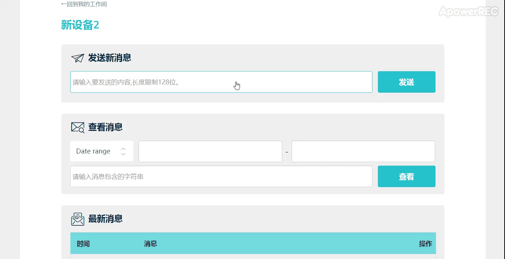

MQTT
MQTT（Message Queue Telemetry Transport）,遥测传输协议，提供订阅/发布模式，更为简约、轻量，易于使用，针对受限环境（带宽低、网络延迟高、网络通信不稳定），可以简单概括为物联网打造。
MQTT是一种基于发布 - 订阅的“轻量级”消息传递协议，用于在TCP / IP协议之上使用，它适用于需要“小代码占用”或网络带宽有限的远程位置的连接。 能实现一对多通信（人们称之为发布或订阅型）的协议。它由3 种功能构成，分别是中介（broker）、发布者（publisher）和订阅者（subscriber）
{kind=link}

broker、publisher、subscriber
中介承担着转发MQTT 通信的服务器的作用。相对而言，发布者和订阅者则起着客户端的作用。发布者是负责发送消息的客户端，而订阅 者是负责接收消息的客户端。MQTT 交换的消息都附带“主题”地址，各个客户端把这个“主题”视为收信地址，对其执行传输消息的操作。 形象地比喻一下，中介就是接收邮件的邮箱。
{kind=link}

MQTT 通信的机制
中介在等待各个客户端对其进行连接。订阅者连接中介，把自己想订阅的主题名称告诉中介。这就叫作订阅。 然后发布者连接中介，以主题为收信地址发送消息。这就是发布。发布者一发布主题，中介就会把消息传递给订阅了该主题的订阅者。
如上图所示，如果订阅者订阅了主题A，那么只有在发布者发布了主题A 的情况下，中介才会把消息传递给订阅者。订阅者和中介总是处于 连接状态，而发布者则只需在发布时建立连接，不过要在短期内数次发布时，就需要保持连接状态了。因为中介起着转发消息的作用，所以各 个客户端彼此之间没有必要知道对方的IP 地址等网络上的收信地址。又因为多个客户端可以订阅同一个主题，所以发布者和订阅者是一 对多的关系。在设备和服务器的通信中，设备相当于发布者，服务器则相当于订阅者。
{kind=link}

MQTT 的主题示例
主题采用的是分层结构。用“#”和“+”这样的符号能指定多个主题。如上图所示，/Sensor/temperature/# 中使用了“#”符号，这样就 能指定所有开头为/Sensor/temperature/ 的主题。此外，/Sensor/+/room1中使用了符号“+”，这样一来就能指定所有开头是/Sensor/、结尾是/room1 的主题。
MQTT原理转载至 [图解物联网 / 日本NTT DATA集团等著；丁灵译. –北京：人民邮电出版社， 2017.4]
物联网平台介绍
发布 - 订阅消息传递模式需要消息代理服务器。代理服务器负责根据消息主题向感兴趣的客户端分发消息。
提示
目前互联网中MQTT物联网平台多种多样,大家可根据自己要求选择适合自己的mqtt物联网平台。本人推荐以下几个比较好的物联网平台。
OneNet 中国移动物联网平台：https://open.iot.10086.cn/
优点：支持多种通讯协议,如MQTT,HTTP等；可编辑应用功能,可制作数据显示和开关控件的页面UI。
缺点：平台操作较为复杂、与官方的MQTT稍有不同,对入门者比较不好理解。
DFRobot Easy IoT 物联网平台：http://iot.dfrobot.com.cn/
优点：操作简单,适合入门者学习。
缺点：不能自定义topic；缺少应用端的UI界面编辑,无法呈现数据。
Adafruit IO 物联网平台：https://io.adafruit.com/
优点：操作简单,适合MQTT教学；有丰富的dashboard编辑功能,可以很好的呈现数据；支持IFTTT,可关联很多的互联网服务,玩法多样。
缺点：国外服务器,连接不稳定,经常连接不上。
除上述外,你也可以自己搭建个mqtt服务器。
连接MQTT代理服务器
下面以Easy IoT 作为讲解如何使用mqtt订阅主题和发布消息。
首先导入需要的模块:
from umqtt.simple import MQTTClient # 导入umqtt.simple模块,用于简单的mqtt客户端功能
from mpython import * # 导入mpython模块
掌控板先连接上互联网:
mywifi=wifi() # 实例化wifi类
mywifi.connectWiFi("ssid","password") # wifi连接,ssid为用户名,password为密码
实例 MQTTClient:
SERVER = "182.254.130.180" # Easy IoT的MQTT服务器地址
username='yourIotUserName' # 你的Easy IoT上的Iot_id
password='yourIotPassword' # 你的Easy IoT上的Iot_pwd
CLIENT_ID = "yourClientID" # 你的Easy IoT上的Client ID
c = MQTTClient(CLIENT_ID, SERVER,1883,username,password) # MQTTClient类实例
c.connect() # mqtt连接
MQTTClient(client_id, server, port=0, user=None, password=None, keepalive=0), client_id 参数为mqtt客户端的唯一的id；server 参数为mqtt代理服务器的
IP地址； port 参数为mqtt的服务器访问的端口号,一般为1883,不同平台端口会有所不一样；user 参数为用于获取mqtt鉴权的用户名；password 参数为获取mqtt鉴权的password；
keepalive 参数为连接保存时间,当在keepalive间隔时间内未有订阅或发布等包,将会自动断开连接。
{kind=link}

发布消息
发布Easy IoT上的设备topic:
c.publish("Bkgk2zXb4",'hello')
备注
publish(topic, msg) , topic 参数为发布的主题,在Easy IoT的管理界面上,是通过topic来区分设备的,且不能修改,这点需要注意；msg 参数为该主题的消息；
publish后,你可以在Easy IoT工作间的该设备“查看详情”中,查询到刚才发布的消息,如下:


订阅主题
设置当接收消息后,打印输出:
def sub_cb(topic, msg):
print((topic, msg))
c.set_callback(sub_cb)
在订阅主题前,需要先设置回调函数 set_callback(sub_cb), sub_cb 为当接收的消息后,处理的函数,须包含两个参数。
订阅主题, topic 参数为需要订阅的主题:
c.subscribe(topic)
最后使用 wait_msg() 等待接收消息:
while True:
c.wait_msg()
远程开关灯
以下示例用到mqtt订阅主题功能做的远程控制开关灯:
from umqtt.simple import MQTTClient
from mpython import *
from machine import Timer
SERVER = "182.254.130.180" # Easy IoT的MQTT服务器地址
username='yourIotUserName' # 你的Easy IoT上的Iot_id
password='yourIotPassword' # 你的Easy IoT上的Iot_pwd
CLIENT_ID = "yourClientID" # 你的Easy IoT上的Client ID
TOPIC='yourTopic' # 你的Easy IoT上设备的topic
mywifi=wifi() # 实例化wifi类
mywifi.connectWiFi("ssid","password") # wifi连接,ssid为用户名,password为密码
try:
def sub_cb(topic, msg): # 当接收到订阅消息时的回调函数
print((topic, msg)) # 打印接收的主题消息
if topic == TOPIC.encode(): # 如果topic为我们设备的topic时,由于收到为字节类型。这里需要将 TOPIC 转换为字节类型。
if msg == b"on": # 如果消息为“on”,亮灯
rgb.fill((0,20,0))
rgb.write()
elif msg == b"off": # 如果消息为“off”,灭灯
rgb.fill((0,0,0))
rgb.write()
c = MQTTClient(CLIENT_ID, SERVER,1883,username,password,keepalive=30) # MQTTClient类实例,并设置连接保持时间间隔为30秒
c.connect() # mqtt连接
c.set_callback(sub_cb) # 设置回调函数
c.subscribe(TOPIC) # 订阅主题
print("Connected to %s" % SERVER)
tim1 = Timer(1) # 创建定时器1
tim1.init(period=20000, mode=Timer.PERIODIC,callback=lambda n:c.ping()) # 20秒间隔发送Ping,保持连接
while True:
c.wait_msg() # 循环等待消息
finally:
c.disconnect() # 异常时,断开mqtt连接
然后点击进入Easy IoT工作间的该设备“发送消息”,发送该主题消息,如下:

{kind=link}
